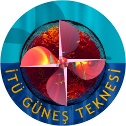
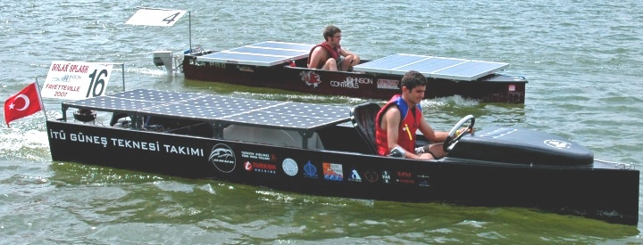
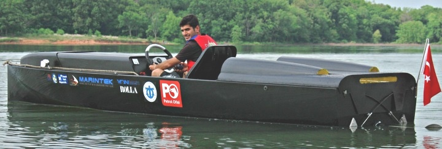
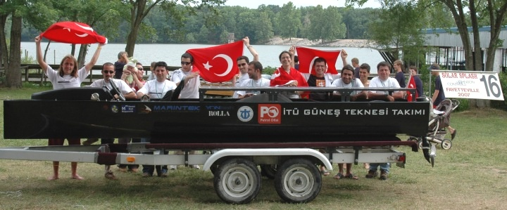
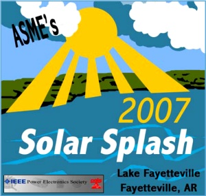
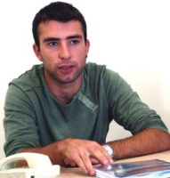

Haberler
> 22-08-2007 > ABD'nde yapýlan Solar Splash Güneþ Tekneleri Yarýþmasý'nda ÝTÜ'nün Nusrat isimli teknesiyle ilk defa temsil edilen Türkiye, dünya 3.'sü oldu. Karbon fiber kompozit gövdeye sahip Tekne'nin bilgisayar destekli tasarým ve imalatý, sponsorlar desteðiyle ÝTÜ öðrencileri tarafýndan gerçekleþtirildi:
Ýstanbul Teknik Üniversitesi (ÝTÜ) Güneþ Teknesi Takýmý tarafýndan tasarlanan ve üretilen, Türkiye'nin güneþ enerjisi ile çalýþan ilk teknesi "Nusrat", 13-17 Haziran 2007 tarihlerinde Amerika Birleþik Devletleri'nin Arkansas Eyaleti'nde düzenlenen "Solar Splash 2007 - Güneþ Tekneleri Yarýþmasý Dünya Þampiyonasý"nda üçüncülük derecesini aldý. Çeþitli kategorilerde gerçekleþtirilen yarýþmada ÝTÜ Güneþ Teknesi Takýmý, yarýþma sonucunda altý farklý ödüle layýk görüldü. Dünya üçüncüsü güneþ teknesi Nusrat, en iyi elektrik sistemi tasarýmý, en iyi güneþ enerjisi sistemi tasarýmý, en iyi görsel sunum, en iyi çaylak takým ve manevra yarýþý üçüncülüðü ödülleri ile birlikte toplam altý ödüle sahip oldu.
Solar Splash Güneþ Tekneleri Yarýþmasý, 14 yýldýr ABD'de düzenleniyor. Bu yýl University of Arkansas'ýn ev sahipliðinde yapýlan Solar Splash, 18 üniversitenin katýlýmý ile gerçekleþti. Yarýþma sonrasýnda Caderville University dünya þampiyonluðu alýrken ikincilik ödülü University of Arkansas'ýn oldu. ÝTÜ Güneþ Teknesi Takýmý'nýn üçüncü olduðu yarýþmada dördüncü ve beþinci sýralara University of Northern Iowa ve University of South Carolina yerleþti.

Resmi daha büyük görmek için üzerini týklayýnýz


Resmi daha büyük görmek için üzerini týklayýnýz
ÝTÜ Makina Fakültesi Makina Mühendisliði bölümü öðrencisi Ersin Demir'in kullandýðý tekne, Sýralama (Qualifying), Manevra (Solar Slalom), Hýz (Sprint) ve Dayanýklýlýk (Endurance) aþamalarýndan oluþan Solar Splash Güneþ Tekneleri Yarýþmasýnda manevra kabiliyeti, saðlamlýðý, özgün tasarým ve üretimi ile dikkat çekti.
Türkiye'nin güneþ enerjisi ile çalýþan ilk teknesi Nusrat, manevra kabiliyeti ve saðlamlýðý ile dikkat çekti. ÝTÜ Makina Fakültesi öðrencisi Ersin Demir'in kullandýðý tekne, bütün aþamalarý baþarý ile tamamladý.
17 Haziran 2007 Pazar günü yapýlan þampiyonluk yarýþý sonunda yapýlan ödül töreninde üçüncülüðe layýk görülen ÝTÜ Güneþ Teknesi Takýmý, katýlýmcýlar ve Arkansaslýlar tarafýndan yoðun ilgi gördü. Katýlýmcýlar için kurulan çadýrda ayný zamanda Türkiye tanýtýmý yapan ÝTÜ Güneþ Teknesi Takýmý, tanýtým filmleri gösterip katýlýmcýlara ve Arkansaslýlara Türk lokumu ikram etti.
Liderliðini ÝTÜ Gemi Ýnþaatý ve Deniz Bilimleri Fakültesi öðrencisi Münir Cansýn Özden'in yaptýðý ÝTÜ Güneþ Teknesi Takýmý, Berkin Kýlýç, Enishan Özcan, Ersin Demir, Esin Ýlhan ve Kenan Askan'dan oluþuyor. Takýmýn danýþmanlýðýný ise ÝTÜ Elektrik Elektronik Fakültesi öðretim üyesi Y. Doç. Dr. Deniz Yýldýrým yürütüyor.
Aþaðýda, Takým Kaptaný Münir Cansýn Özden ile yapýlan bir röportaj yer almaktadýr;
Güneþ enerjisiyle çalýþan bir tekne üretme fikri ne zaman ve nasýl ortaya çýktý?
Deniz benim için hep çok önemli olmuþtur. Anneannem, dört beþ yaþlarýmdayken çizdiðim balýk ve gemi resimlerini hala saklar. Çocukluðumun en heyecanlý zamanlarý, dedemin dürbünü ile Ýzmit Körfezine giren gemileri izlemek ve onlarýn resimlerini yapmaya çalýþmaktý. Ortaokul yýllarýmda arkadaþlarýmla evdeki sandalyeleri kýrýp onlarýn ahþap parçalarýyla küçük tekneler yapmýþ ve bunlara oyuncak arabalarýmýzdan söktüðümüz motorlar takýp havuzda yüzdürmüþtük. Birkaç sene sonra, üniversite sýnavý açýklandýktan sonra gireceðim bölüm de Gemi Ýnþaatý ve Deniz Bilimleri Fakültesine baðlý Gemi Ýnþaatý ve Gemi Makinalarý Mühendisliði olacaktý.
Üniversite birinci sýnýfta Gemi Mühendisliðine Giriþ dersinde, ülkemiz gemi inþaa sektöründeki kuþkusuz en önemli isimlerden Prof. Dr. Yücel Odabaþý þöyle demiþti;
"Gemi, Ýngilizce'de "she"dir. Bir kadýn olarak bahsedilir ondan.. Ve bir baba kýzýný yetiþtirirken ne kadar zorlanýrsa mühendisi de gemisini tasarlar ve imal ederken o kadar zorlanýr.. Gemi imal edildikten sonra gelinlik bir kýz gibi süslenir ve kýzaða konulur. Gemi sahibi inancýna göre ya þampanya patlatýr ya da kurban keser. Ve sonrasýnda halatlar kesilir ve gemi suya iner. Hem aðlayýp hem giderim diyen bir gelin gibi de suya inince baþýný bir defa suya daldýrýp çýkarýr ve babasýna, mühendisine bir selam verir.. Çocuklar ben 40 yýldýr kaç tane geminin suya iniþini, mühendisi olarak izledim bilemiyorum.. Ama hala çok büyük bir keyif alýrým bu törenden. Dilerim siz de bu duyguyu yaþarsýnýz.."
O derste söylenenleri, bana hissettirdiklerini arkadaþlarýmla paylaþtým ve düþünebildiðimiz tek þey bir an önce kendi tasarýmýmýz bir gemi yapmak ve onun suya iniþine tanýk olabilmekti. 2004 yýlý Mayýs ayýnda, hem öðrenmekte olduðumuz teorik bilgileri pratiðe geçirebileceðimiz, hem baþka öðrencileri de peþimizden sürükleyebileceðimiz bir fikir geldi aklýmýza. ÝTÜ Ayazaða Kampüsü içerisindeki gölette güneþ enerjisiyle çalýþan uzaktan kumandalý küçük teknelerle bir yarýþma düzenlemeye karar verdik. Öncesinde biz birkaç araç yapacak ve bu iþi öðrenecek, sonrasýnda bunlarý da sergileyerek yarýþma çaðrýsýnda bulunacaktýk. Bu küçük tekneleri nasýl yapabileceðimizle ilgili araþtýrma yaparken, Amerika Birleþik Devletleri'nde üniversite okuyan akranlarýmýzýn bizden daha büyük düþündüklerini ve uzaktan kumandalý araçlar deðil kendilerinin binip sürdükleri tekneler tasarlayýp Solar Splash isimli bir yarýþmada baþka teknelere karþý yarýþtýklarýný gördük. Uzaktan kumandalý tekneler yapmak öðrenci harçlýklarýmýzdan arttýrarak altýndan kalkabileceðimiz bir fikirken biz de büyük düþünmeye ve ülkemizi bu yarýþmada temsil etmeye karar verdik.